【概率模型】HMM(隐马尔可夫模型)
马尔科夫过程
马尔科夫过程就是一个状态转移图
其可以有N个状态。状态到状态的转换是赋予概率的。
于是可以用$NN$的*概率转移矩阵表示
如一个例子
假设几个月大的宝宝每天做三件事：玩（兴奋状态）、吃（饥饿状态）、睡（困倦状态），这三件事按下图所示的方向转移：
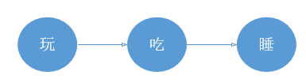
这就是一个简单的马尔可夫过程。需要注意的是，这和确定性系统不同，每个转移都是有概率的，宝宝的状态是经常变化的，而且会任意在两个状态间切换：
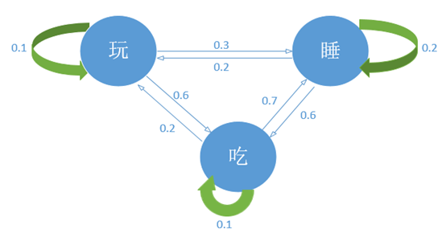
如图。这个过程的概率转移矩阵A为
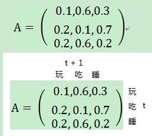
每行累加和为1.
HMM
有时我们无法看到$状态序列Q$,只能看到观察序列（或输出序列）$O$
这时隐马尔可夫模型就产生了。
一个是可观测的状态集O和一个隐藏状态集Q
还是上面的例子。为了简化描述，将“玩”这个状态去掉，让宝宝每天除了吃就是睡
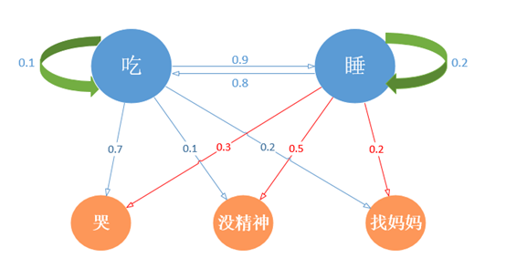
在HMM里。我们使用混淆矩阵B
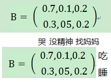
且运用独立性假设：假设任意时刻的观测只依赖于该时刻的马尔可夫链的状态，与其它观测状态无关。
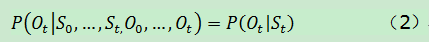
模型定义
- N 表示隐藏状态的数量，我们要么知道确切的值，要么猜测该值；
- M 表示可观测状态的数量，可以通过训练集获得；
- π={πi} 为初始状态概率；代表的是刚开始的时候各个隐藏状态的发生概率；
- $A=\{a_{ij}\}$为隐藏状态的转移矩阵；N*N维矩阵，代表的是第一个状态到第二个状态发生的概率；
- $B=\{b_{ij}\}$为混淆矩阵，N*M矩阵，代表的是处于某个隐状态的条件下，某个观测发生的概率。
HMM要解决的问题
HMM主要解决三大类问题
- 模型评估问题
已知一个观察序列。和模型λ=（A,B,π}的条件下，观察序列O的概率，即P(O|λ}。
对应算法：向前算法、向后算法 - 解码问题
从观察序列推断隐藏状态序列
也就是已知模型参数和可观察状态序列，怎样选择一个状态序列S={S1,S2,…,ST}，能最好的解释观测序列O。
对于算法维特比算法 - 参数估计问题
数据集仅有观测序列，如何调整模型参数 λ=(π, A, B), 使得P(O|λ)最大
对应算法：鲍姆-韦尔奇算法
模型评估问题
遍历法
实现较为简单，罗列可能情况后将其相加即可。共有3种可观察状态，每个可观察状态对应2种隐藏状态，共有2^3 = 8中可能的情况。其中一种：
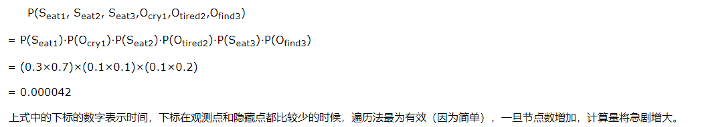
需要计算$|O|^{|S|}$种情况
Forward Algorithm
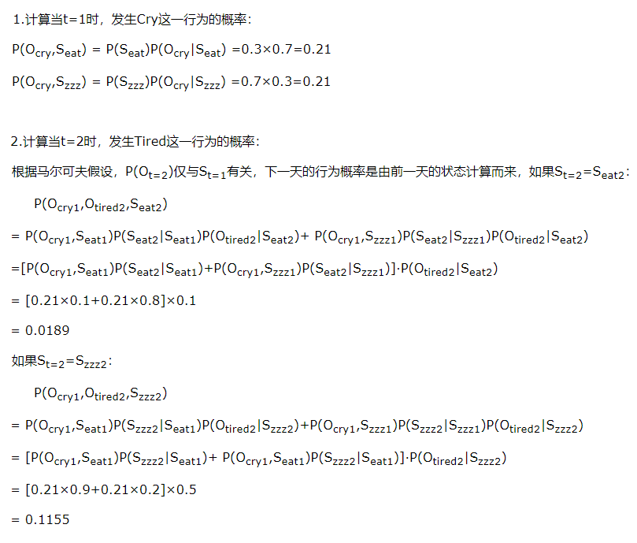
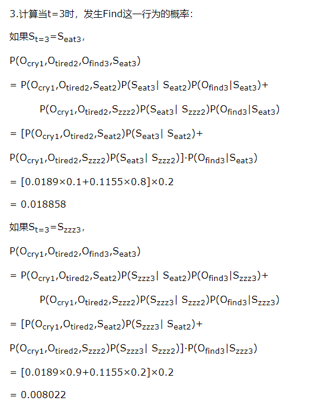
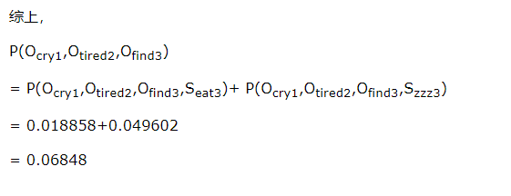
思想就是
我们可以定义一个前向变量用来表示在时刻t，输出了状态$O_1O_2…O_t$,并且位于状态$s_i$的概率
于是下一时刻的输出序列概率就可以用前一时刻的前向变量来表示
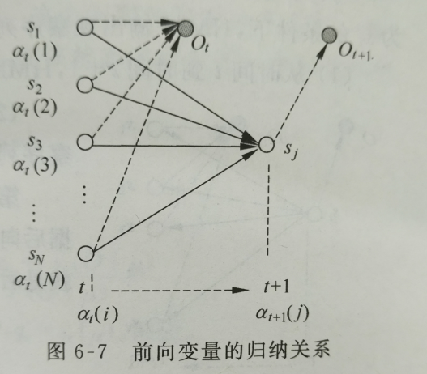
如图
对于t+1时刻的前向变量$\alpha_{t+1}(j)=(\sum_{t=1}^Na_t(i)a_{ij})b_j(O_{t+1})$
解释就是先根据前面t时每个前向变量来求出，从t下每个状态转移到t+1下某状态j的概率，然后求出从$s_j$状态输出某值$O_{t+1}$的概率
迭代求到最终时间T的所有N个状态的前向变量后。就可以终结求和Backward Algorithm
和前向算法差不多。不过从最终输出开始干
引入后向变量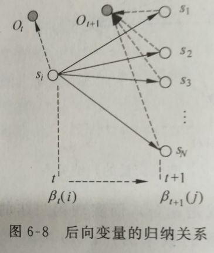
算法步骤
- 1.初始化$\beta_T(i)=1$
- 2.迭代$\beta_t(i)=\sum_{j=1}^Ta_{ij}b_j(O_{t+1})\beta_{t+1}(j)$
- 3.终结$P(O|\mu)=\sum_{i=1}^N\pi_ib_i(O_1)\beta_1(i)$
解码问题
维特比算法(Viterbi Algorithm)(也可用于卷积码译码)
用于解决已知一个输出序列，怎样找到一个状态序列能最好地解释这个输出序列

上图是Viterbi算法的动画图。简单来说就是：从开始状态之后每走一步，就记录下到达该状态的所有路径的概率最大值，然后以此最大值为基准继续向后推进。显然，如果这个最大值都不能使该状态成为最大似然状态路径上的结点的话，那些小于它的概率值（以及对应的路径）就更没有可能了。
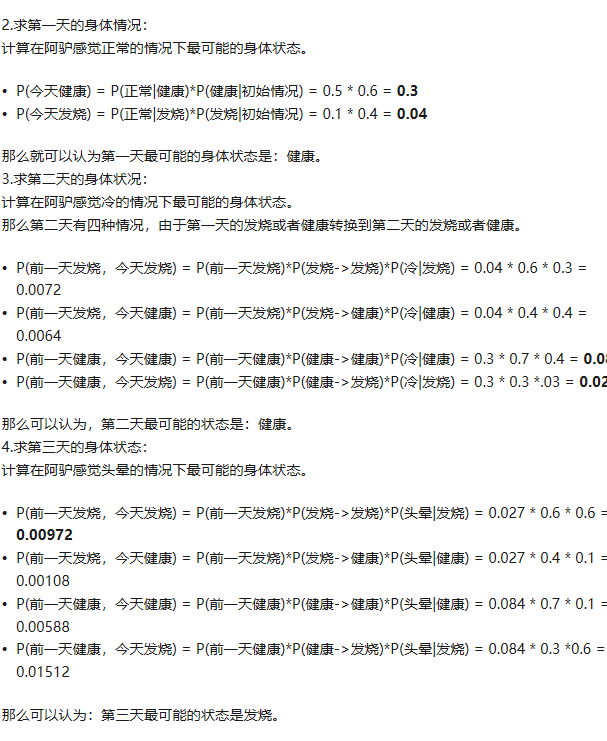
先来定义一个维特比变量$\delta_t(i)=max_{q_1,q_2,..q_{t-1}}P(q_1,q_2,…,q_t=s_i,O_1O_2…O_t|\mu)$
就是某一时刻t下，HMM沿着某一条路径到达s_i的概率。（动态规划法）..和找最短路径的算法差不多
$\delta_{t+1}(i)=max_j[\delta_t(j)a_{ji}]b_i(O_{t+1})$
找出前一时刻转移到当前时刻状态i并输出某O的最大概率.
参数估计
Forward-backward algorithm
其实就是使用期望最大算法
首先初始化参数。
初始化初始状态概率$\pi_i$,要满足和为1
初始化转移矩阵A,满足行和为1
初始化输出概率矩阵B
$\sum_{k=1}^Mb_j(k)=1$
表示某状态下，输出所有结果的概率和为1EM计算
- E步骤:由现有的参数，估计$\xi_t(i,j)$和$\gamma_t(i)$
$\xi$表示在已知参数和输出结果下，从状态i到状态j的转移概率
$\gamma$表示在时间t时，位于状态$s_i$的概率 - 用E中得到的值重新估计参数
$\pi_i=\gamma_1(i)$
$a_{ij}=\frac{\sum_{t=1}^{T-1}\xi_t(i,j)}{\sum_{t=1}^{T-1}\gamma_t{(j)}}$
$b_{j}(k)=\frac{\sum_{t=1}^{T}\gamma_t(j)*\delta(O_t,v_k)}{\sum_{t=1}^{T-1}\gamma_t{(j)}}$
- E步骤:由现有的参数，估计$\xi_t(i,j)$和$\gamma_t(i)$